บทนี้ตอบคำถาม "ใครมีสิทธิ์ส่งบนสื่อกลางที่แชร์กัน?" (Medium Access)
เมื่อหลายสถานีใช้ช่องสัญญาณเดียวกัน ถ้าส่งพร้อมกันจะ ชนกัน (collision) — บทนี้เรียนวิธีจัดการ 3 กลุ่ม: (1) Contention-based / Random access — ALOHA, CSMA, CSMA/CD, CSMA/CA (2) Controlled access — Reservation, Polling, Token passing (3) Channelization — FDMA, TDMA, CDMA (OFDMA)
ต่อจาก Lecture 5.x (framing, error, flow control บนลิงก์) และเป็นพื้นฐานของ Lecture 6.2 Ethernet (CSMA/CD) และ Wi-Fi (CSMA/CA)
1. Review: Physical และ Logical Topologies
Topology = การจัดวางและความสัมพันธ์ของอุปกรณ์เครือข่ายและการเชื่อมต่อระหว่างกัน [Cisco NetAcad ITN7.0]
| Physical topology | Logical topology |
|---|---|
| แสดง การเชื่อมต่อทางกายภาพ และอุปกรณ์ต่อกันอย่างไร | ระบุ การเชื่อมต่อเสมือน ระหว่างอุปกรณ์ โดยใช้ interface และ IP addressing scheme |
2. Transmission Mode ⭐
| โหมด | ลักษณะ | ตัวอย่าง |
|---|---|---|
| Simplex | สื่อสาร ทางเดียว (unidirectional) — อุปกรณ์เป็นผู้รับอย่างเดียวหรือผู้ส่งอย่างเดียว | TV, วิทยุ (รับ), รีโมตคอนโทรล (ส่ง) |
| Half-duplex | ส่งหรือรับได้ทีละฝั่ง บนสื่อกลางที่แชร์ | WLANs, legacy bus topology กับ Ethernet hubs |
| Full-duplex | ทั้งสองฝั่งส่งและรับพร้อมกันได้ | Ethernet switches |
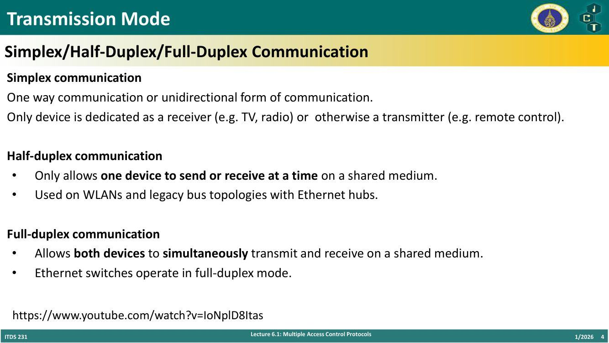
💡 Simplex = วิทยุ FM, Half-duplex = วิทยุสื่อสาร (walkie-talkie กดพูดทีละคน), Full-duplex = โทรศัพท์
วิดีโอ: https://www.youtube.com/watch?v=IoNplD8Itas
3. Multiple Access Control และ Collision
3.1 Multiple Access Control
- Multiple Access Control = ชุดขั้นตอน ที่ใช้จำกัดการส่งข้อมูลของผู้ส่งบน shared channel หรือ broadcast link เพื่อ ลดการชนกันของข้อมูล
- Multiple Access Protocols = โปรโตคอลที่ควบคุมการเข้าถึงลิงก์ (เป็นหน้าที่ "Media access control" ใน data link layer)
ทำไมต้องมี?
- LAN แบบดั้งเดิม ทุกสถานีต่อกับ สื่อกลางที่แชร์ (bus topology หรือ star topology ที่ใช้ hub)
- มีโอกาสสูงที่หลายสถานีพยายามเข้าถึงสื่อพร้อมกัน
- ถ้า 2 สถานีขึ้นไปส่งพร้อมกัน → collision
- ดังนั้นทุกโปรโตคอลใน data link layer ต้องมีวิธี Medium Access Control (MAC) ป้องกันความขัดแย้ง
⚠️ อย่าสับสน: MAC (Media Access Control) method = วิธีคุมการเข้าถึงสื่อ / MAC address = ที่อยู่ฮาร์ดแวร์ (Lecture 6.2)
3.2 Collision
- ถ้า 2 เครื่องขึ้นไปส่งพร้อมกัน → เกิด collision ได้
- collision เกิดในอากาศได้ และ ไม่จำเป็นต้องอยู่เครือข่ายเดียวกัน ขอแค่ สัญญาณใช้ความถี่เดียวกัน
- ผลคือสัญญาณรวมกันมี ระดับที่อ่านไม่ได้ (undefined levels) — เทียบ (a) สัญญาณจากโหนดเดียวที่ชัดเจน กับ (b) สัญญาณจากสองโหนดที่ชนกัน
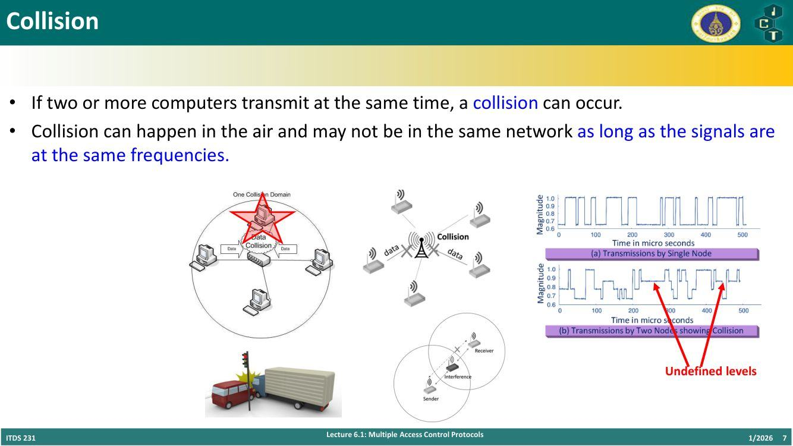
4. ภาพรวมวิธี Multiple Access ⭐⭐
เป้าหมาย: ป้องกันสัญญาณชนกัน → ต้อง ควบคุมว่าผู้ส่งแต่ละรายจะ "พูด" อย่างไรและเมื่อไหร่
| Random-access protocols (Contention-based) | Controlled-access protocols | Channelization protocols |
|---|---|---|
| ไม่มี carrier sense: ALOHA (MA) | Reservation | FDMA |
| มี carrier sense: CSMA, CSMA/CD, CSMA/CA | Polling | TDMA |
| Token passing | CDMA |
- CS = Carrier Sense (ฟังก่อนว่าช่องว่างไหม), MA = Multiple/Media Access
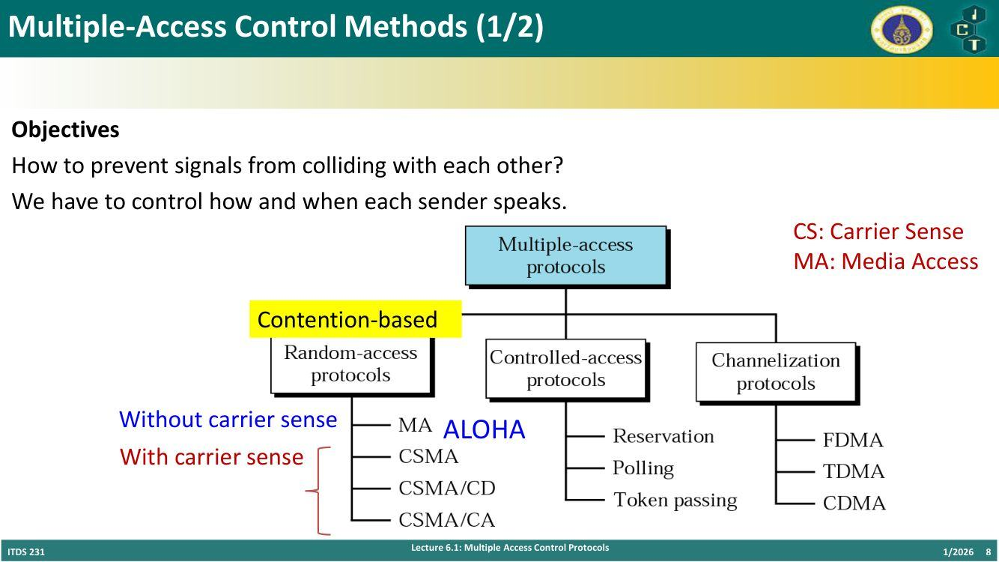
4.1 รายละเอียดแต่ละกลุ่ม
Contention-based access
- Performance: ดีที่สุดสำหรับ traffic แบบ bursty และโหลด เบาถึงปานกลาง
- (+) implement ง่าย
- (−) ประสิทธิภาพแย่เมื่อ traffic หนาแน่น
- ทุกโหนดทำงาน half-duplex แย่งกันใช้สื่อ เช่น:
- CSMA/CD — legacy bus-topology Ethernet
- CSMA/CA — Wireless LANs
Controlled access
- Deterministic access — แต่ละโหนดมี เวลาของตัวเอง บนสื่อ
- ใช้ใน legacy network เช่น Token Ring และ ARCNET
- Round Robin-based: Polling (Centralized), Token Passing (Decentralized)
- Reservation-based: BRAP — Broadcast Recognition with Alternating Priorities (Centralized), DQDB (IEEE 802.6), DAMA (Decentralized)
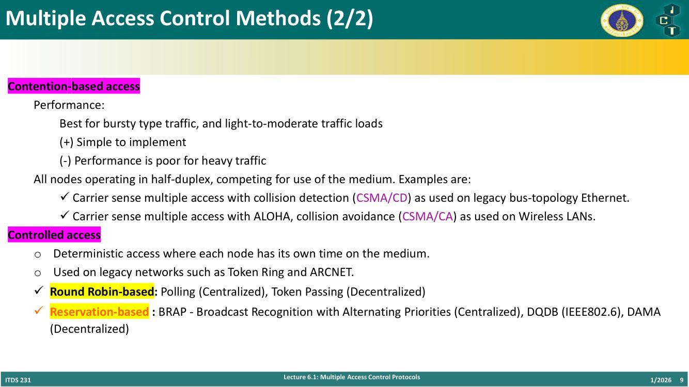
4.2 Multiple-Access Control Protocols ในเทคโนโลยีจริง
| Fast Ethernet | Gigabit Ethernet | Fibre Channel | Wireless LAN | |
|---|---|---|---|---|
| Data rate | 100 Mbps | 1 Gbps, 10 Gbps | 100 Mbps–3.2 Gbps | 1 Mbps–54 Mbps |
| Transmission media | UTP, STP, optical fiber | UTP, shielded cable, optical fiber | Optical fiber, coaxial cable, STP | 2.4-GHz, 5-GHz microwave |
| Access method | CSMA/CD | Switched | Switched | CSMA/Polling |
| Supporting standard | IEEE 802.3 | IEEE 802.3 | Fibre Channel Association | IEEE 802.11 |
Working group: https://en.wikipedia.org/wiki/IEEE_802, https://mentor.ieee.org/802/bp/StartPage
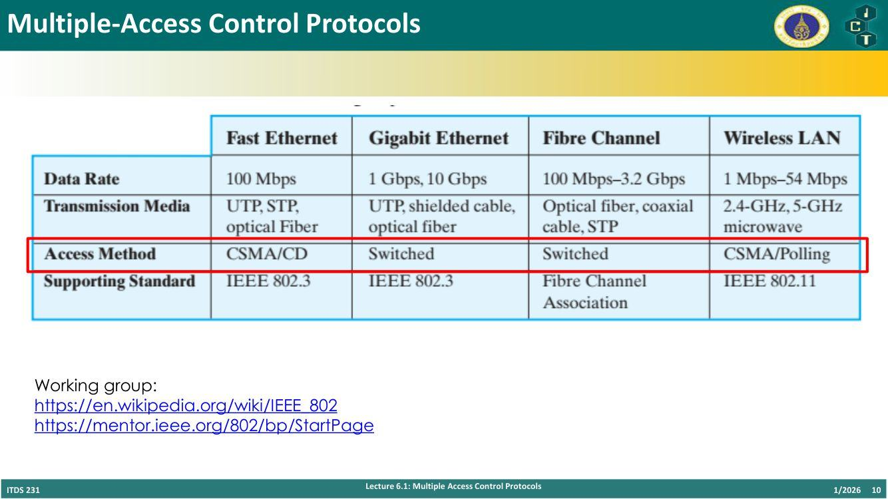
5. Contention-Based: ภาพรวม
5.1 CSMA/CD (LAN)
- ใช้ใน legacy Ethernet LANs
- ทำงาน half-duplex (ส่งหรือรับทีละเครื่อง)
- ใช้กระบวนการ ตรวจจับการชน (collision detection) กำหนดว่าเมื่อไหร่ส่งได้ และทำอะไรถ้าส่งพร้อมกัน
- Random Access Method:
- ทุกสถานีมี สิทธิ์ใช้สื่อเท่ากัน ไม่มีสถานีใดควบคุม
- ถ้ามีมากกว่า 1 สถานีส่ง → access conflict = collision! frame จะถูกทำลายหรือถูกแก้ไข
- ไม่มี scheduler ไม่มีกฎ — แข่งขัน (contention) กับสถานีอื่น
กระบวนการตรวจจับการชน:
- อุปกรณ์ที่ส่งพร้อมกันทำให้เกิด signal collision บนสื่อที่แชร์
- อุปกรณ์ ตรวจพบการชน (สื่อไม่ว่าง)
- อุปกรณ์ รอเวลาสุ่ม แล้วส่งใหม่
วิวัฒนาการ: MA → CSMA → แตกเป็น CSMA/CD และ CSMA/CA
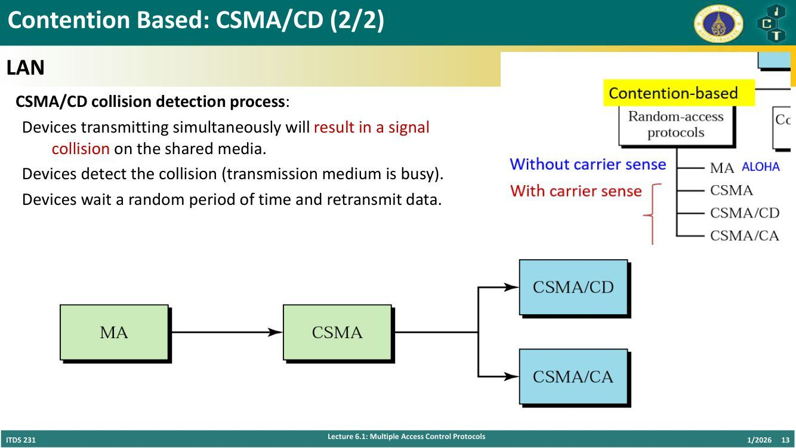
5.2 CSMA/CA (WLAN)
- ใช้ใน IEEE 802.11 WLANs
- ทำงาน half-duplex
- ใช้กระบวนการ หลีกเลี่ยงการชน (collision avoidance)
กระบวนการหลีกเลี่ยงการชน:
- ตอนส่ง อุปกรณ์ แนบระยะเวลาที่ต้องใช้ในการส่ง (time duration) ไปด้วย
- อุปกรณ์อื่นบนสื่อได้รับข้อมูลนี้ จึง รู้ว่าสื่อจะไม่ว่างนานเท่าไหร่
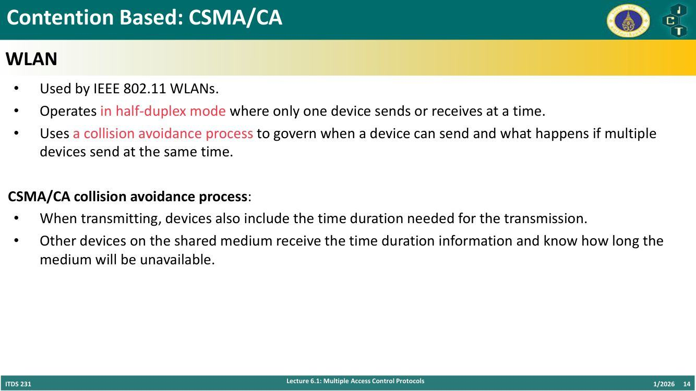
6. ALOHA ⭐
6.1 ประวัติ
- ALOHA = วิธี random-access แรกสุด พัฒนาช่วง ต้นทศวรรษ 1970
- ออกแบบสำหรับ radio (wireless) LAN ที่ 9600 bps (มหาวิทยาลัยฮาวาย)
6.2 หลักการ
| ลักษณะ | ความหมาย |
|---|---|
| Multiple Access | สถานีใดก็ได้ ส่งทันทีเมื่อมี frame |
| No Carrier Sense | ไม่ตรวจ ว่ามีสถานีอื่นกำลังส่งหรือสื่อว่างไหม — สำหรับสื่อไร้สาย สถานีอาจอยู่ไกลกันจนไม่ได้ยินกันอยู่แล้ว |
| No Checking for Collision | หลังส่ง ไม่ฟัง สื่อว่าชนไหม |
| Acknowledgement | หลังส่งแล้ว รอ ACK (explicit หรือ implicit) ถ้าไม่ได้ในเวลาที่กำหนด → ส่งใหม่ |
รายละเอียด ACK:
- เวลาที่รอ ACK = 2 เท่าของ maximum propagation delay
- ถ้าไม่ได้ ACK → ถือว่า frame หาย → ส่งใหม่หลังรอเวลาสุ่ม (random)
- Propagation time = t₂ − t₁ = d / propagation speed — ความเร็วสัญญาณขึ้นกับสื่อและความถี่
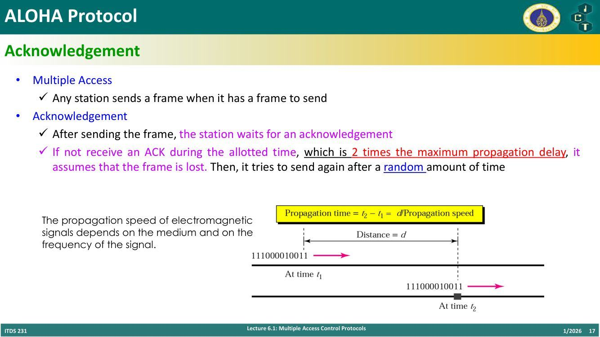
6.3 Pure ALOHA: Vulnerable Time ⭐
- Vulnerable time = ช่วงเวลาที่มีโอกาสเกิด collision
- frame B ส่งที่เวลา t ใช้เวลา T_fr:
- ถ้า A เริ่มส่งตั้งแต่ t − T_fr → ปลายของ A ชนกับต้นของ B
- ถ้า C เริ่มส่งก่อน t + T_fr → ปลายของ B ชนกับต้นของ C
- Pure ALOHA vulnerable time = 2 × T_fr
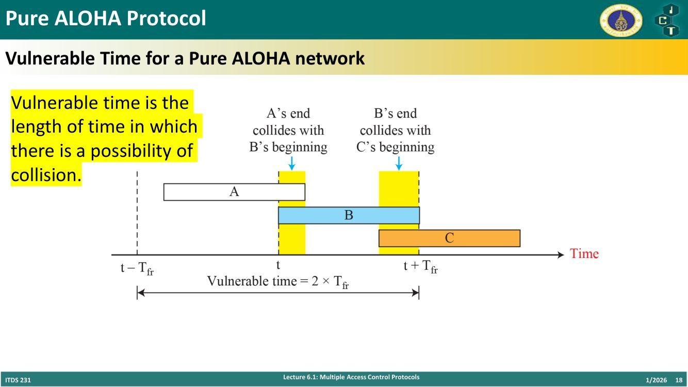
6.4 Slotted ALOHA ⭐
- แบ่งเวลาเป็น slot ขนาดเท่ากับ 1 frame; สถานี ส่งได้เฉพาะตอนต้น slot
- ถ้ามี 2 สถานีส่งใน slot เดียวกัน → ชนทั้ง slot (collision duration = 1 slot)
- ตัวอย่างในภาพ: Slot 2 — Frame 2.1 และ 3.1 ชน; Slot 3 — Frame 1.2 และ 4.1 ชน; Slot 1, 4, 5, 6 ส่งสำเร็จ
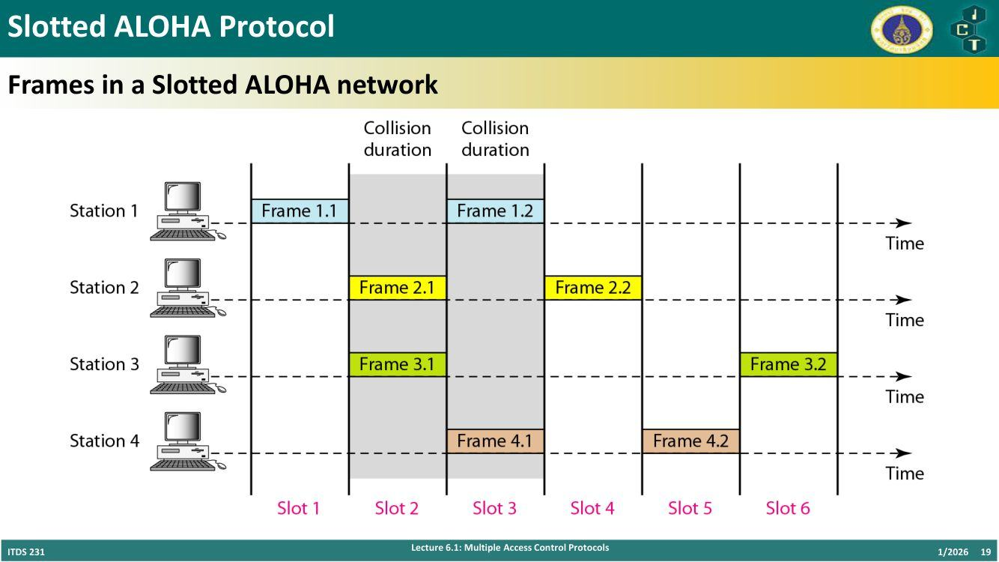
- Slotted ALOHA vulnerable time = T_frame (A และ B ชนกันเฉพาะเมื่อเริ่มใน slot เดียวกัน)
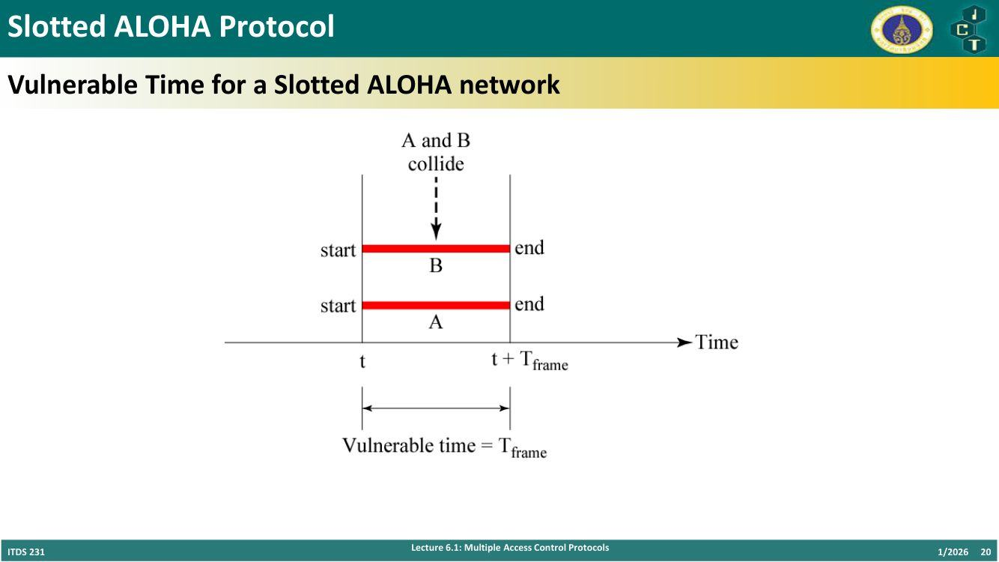
⚠️ Pure ALOHA = 2 × T_fr / Slotted ALOHA = T_fr → slotted ลดโอกาสชนลงครึ่งหนึ่ง
7. CSMA (Carrier Sense Multiple Access) ⭐
7.1 หลักการ
- เพื่อลดโอกาสชน สถานีควร ฟังสื่อก่อนส่ง → "Sense before transmit"
- CSMA ลดโอกาสชนได้ แต่กำจัดไม่ได้
- เพราะ propagation delay — สถานีอาจฟังแล้วพบว่าว่าง เพียงเพราะสัญญาณของอีกสถานีที่ส่งไปแล้ว ยังเดินทางมาไม่ถึง
7.2 Collision ใน CSMA
- A ส่ง frame ที่ t₁, Z ฟังแล้วยังไม่ได้ยิน A จึงส่งที่ t₂ → สัญญาณชนกันกลางทาง → collision signal ย้อนกลับไปหาทั้งสองฝั่ง
- Space/Time model: B เริ่มส่งที่ t₁, C เริ่มที่ t₂ → มีพื้นที่ที่สัญญาณ A (B) และ C ซ้อนทับกัน (area where both signals exist)
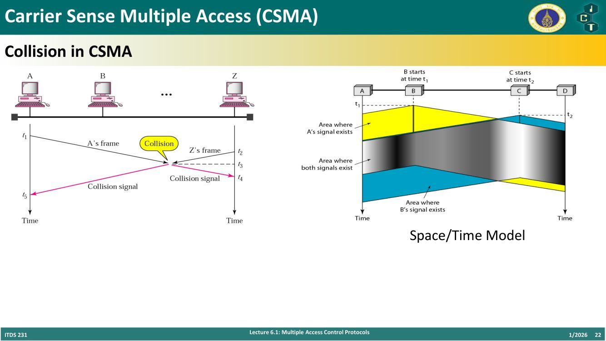
7.3 Persistence Strategies ⭐
Persistence strategy = กำหนดว่าสถานี ควรทำอะไรเมื่อฟังแล้วพบว่าช่องไม่ว่าง (busy)
- Nonpersistent
- Persistent
- 1-persistent
- p-persistent
| Strategy | ถ้าช่อง ว่าง | ถ้าช่อง ไม่ว่าง |
|---|---|---|
| Non-persistent | ส่งทันที | รอเวลาสุ่ม แล้วค่อยฟังใหม่ |
| 1-persistent | ส่งทันที (ความน่าจะเป็น 1) | ไม่รอเวลาสุ่ม — ฟังต่อเนื่องจนกว่าว่างแล้วส่งเลย |
| p-persistent | ส่งด้วย ความน่าจะเป็น p | ฟังต่อจนว่าง |
ตัวอย่าง p-persistent (p = 0.2): สุ่มเลข 1 ถึง 100 → ถ้าน้อยกว่า 20 สถานีจะส่ง (ไม่งั้นรอ slot ถัดไปแล้วลองใหม่)
| Persistence strategy | Non-persistent vs 1-persistent |
|---|---|
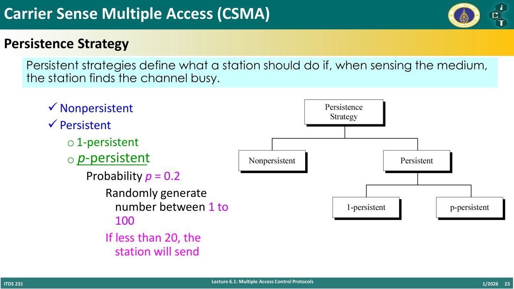 |
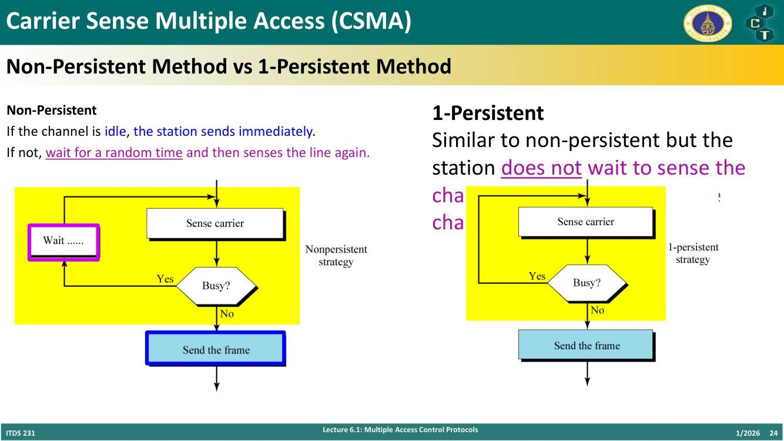 |
💡 Non-persistent = เห็นห้องน้ำไม่ว่าง เดินไปทำอย่างอื่นก่อนแล้วค่อยกลับมาดู (ชนน้อย แต่อาจเสียเวลา) 1-persistent = ยืนรอหน้าประตู ว่างปุ๊บเข้าปั๊บ (เร็ว แต่ถ้ามีคนรอหลายคนจะแย่งกันเข้าชน) p-persistent = ว่างแล้วโยนเหรียญก่อนว่าจะเข้าไหม (สมดุลระหว่างสองแบบ)
8. CSMA/CD (Collision Detection) ⭐⭐
8.1 หลักการ
- CSMA ไม่เคยถูกใช้จริงโดยลำพัง เพราะ ไม่ได้กำหนดขั้นตอนเมื่อเกิด collision
- CSMA/CD เพิ่มขั้นตอนจัดการ collision:
- สถานี เฝ้าดูสื่อ ว่าส่งสำเร็จไหม
- ถ้า มี collision → back off (รอ) ช่วงเวลาหนึ่งแล้วส่งใหม่
- เวลารอสุ่มระหว่าง 0 ถึง (2^N − 1) × propagation_time (N = ครั้งที่พยายาม) → เรียกว่า exponential back off
💡 ยิ่งชนบ่อย ช่วงสุ่มยิ่งกว้างขึ้นเท่าตัว (1, 3, 7, 15, … ช่อง) → โอกาสสุ่มได้เวลาซ้ำกันลดลง
8.2 Collision of the First Bit
- A เริ่มส่งที่ t₁, C เริ่มส่งที่ t₂ (ยังไม่ได้ยิน A)
- บิตแรกของ A และ C ชนกันกลางทาง (collision occurs)
- C ตรวจพบ collision ก่อน ที่ t₃ → abort (หยุดส่ง)
- A ตรวจพบ ที่ t₄ → abort
- ช่วง t₁–t₄ = transmission time ของ A, t₂–t₃ = transmission time ของ C
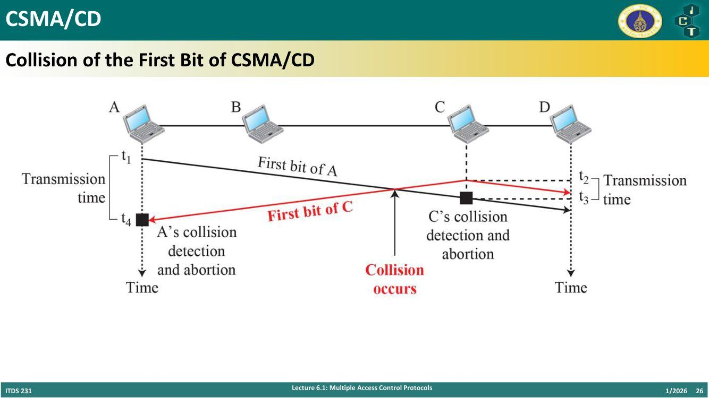
⚠️ สำหรับ CSMA/CD ต้องให้ frame ยาวพอ ที่ผู้ส่งยังส่งไม่จบตอนที่สัญญาณชนย้อนมาถึง ไม่อย่างนั้นจะตรวจจับการชนไม่ได้ (เป็นเหตุผลของ minimum frame size ใน Ethernet)
8.3 Energy Level
ระดับพลังงานบนสาย 3 สถานะ:
| สถานะ | ระดับพลังงาน |
|---|---|
| Idle (ว่าง) | ศูนย์ |
| Normal frame transmission | ปกติ |
| Collision | สูงกว่าปกติ (สัญญาณรวมกัน ประมาณ 2 เท่า) |
→ สถานีตรวจ collision ได้โดยดูว่า พลังงานสูงผิดปกติ
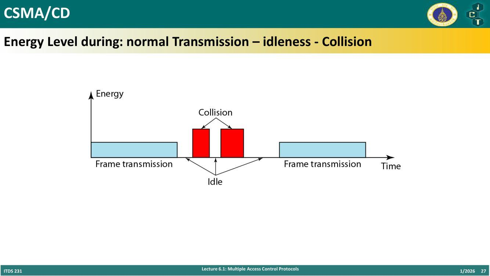
9. CSMA/CA (Collision Avoidance) ⭐⭐
9.1 หลักการ
- ต่างจาก CSMA/CD: ไม่มี collision detection! (ในไร้สายตรวจจับการชนยาก — เช่นปัญหา hidden terminal)
- ขั้นตอน:
- ใช้ persistence strategy อย่างใดอย่างหนึ่งในการฟังช่อง
- เมื่อพบว่าช่องว่าง → รอ IFG (InterFrame Gap) ระยะหนึ่ง
- รอเวลาสุ่มอีกช่วง (contention window)
- ส่ง frame แล้วรอ ACK
- CSMA/CA ใช้ใน wireless LAN
9.2 IFG (IFS) และ Contention Window ⭐
ลำดับเวลา: Continuously sense (busy) → Found idle → รอ IFS → Contention window (แบ่งเป็น slot, ขนาดแบบ binary exponential) → Send frame → Time-out (รอ ACK)
- IFS ใช้กำหนด priority ของสถานีหรือ frame ได้ → IFG ที่มีค่าสูงกว่าจะมี priority ต่ำกว่า
- ถ้าพบว่าช่องไม่ว่างระหว่าง contention window: ไม่เริ่มนับใหม่ แต่ หยุด timer ไว้ แล้ว นับต่อเมื่อช่องว่าง
- Contention window = ช่วงเวลาที่แบ่งเป็น slots — สถานีที่พร้อมส่ง สุ่มจำนวน slot เป็นเวลารอ
- จำนวน slot เปลี่ยนตาม binary exponential backoff: ครั้งแรก 1 slot แล้ว เพิ่มเป็นสองเท่า ทุกครั้งที่สถานีตรวจไม่พบช่องว่างหลังเวลา IFS
สรุปเป็นภาษาไทย (สไลด์): หากช่องสัญญาณว่าง จะรอ IFG แล้วรอเวลาอีกจำนวนหนึ่งตามจำนวน slot ที่สุ่ม แล้วจึงส่ง frame ออกไป และตั้ง timer รอ ACK จากผู้รับ แล้วค่อยส่ง frame ที่ 2
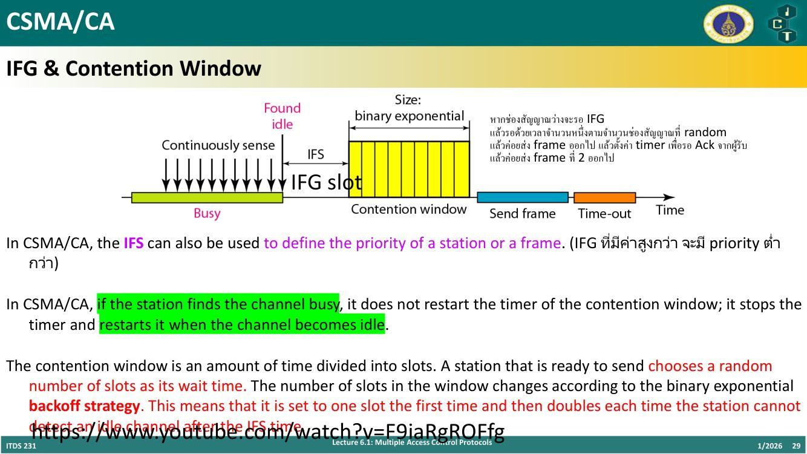
วิดีโอ: https://www.youtube.com/watch?v=F9iaRgROFfg
9.3 Procedure with RTS/CTS และ NAV ⭐
ศัพท์:
| ย่อ | เต็ม |
|---|---|
| DCF | Distributed Coordination Function |
| DIFS | DCF Interframe Spacing |
| SIFS | Short Inter-Frame Space |
| NAV | Network Allocation Vector |
| RTS | Request to Send |
| CTS | Clear to Send |
ขั้นตอน (Source A → Destination B, สถานีอื่น C, D):
- A backoff แล้วรอ DIFS
- A ส่ง RTS ไป B
- B รอ SIFS แล้วตอบ CTS
- สถานีอื่น (C, D) ได้ยิน CTS → ตั้ง NAV (งดส่งตามเวลาที่ระบุ)
- A รอ SIFS แล้วส่ง Data
- B รอ SIFS แล้วส่ง ACK
- NAV ของสถานีอื่นหมดเวลาหลัง ACK
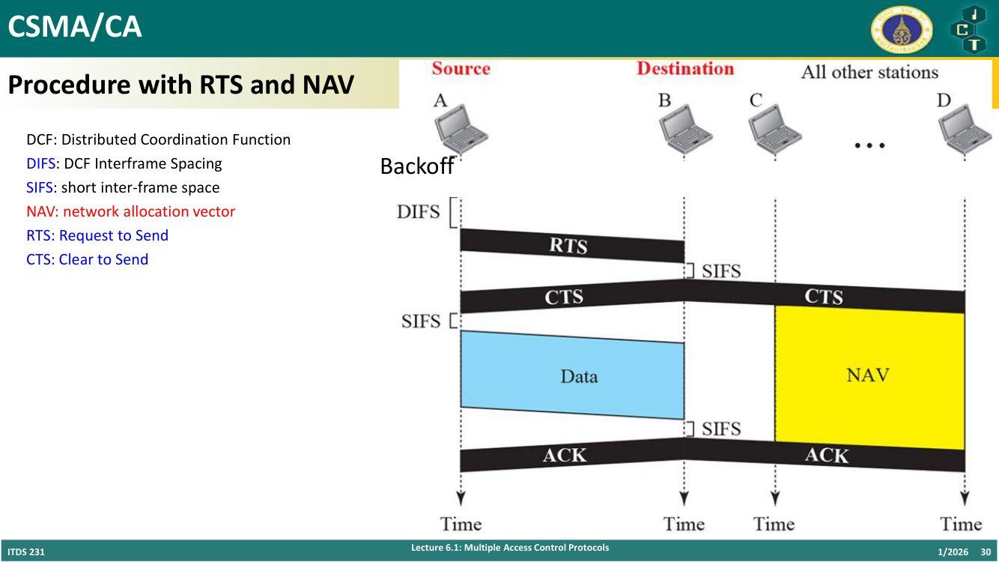
9.4 NAV ทำงานอย่างไร
- คำถาม: เมื่อสถานีหนึ่งได้สิทธิ์ใช้ช่อง สถานีอื่นจะเลื่อนการส่งอย่างไร? → คำตอบ: NAV
- เมื่อสถานีส่ง RTS จะ แนบระยะเวลาที่ต้องใช้ช่อง ไปด้วย
- สถานีที่ได้รับผลกระทบจะสร้าง timer ชื่อ NAV แสดงว่าต้อง รอนานเท่าไหร่ก่อนจะตรวจว่าช่องว่างได้
- ทุกครั้งที่มีสถานีส่ง RTS สถานีอื่นเริ่ม NAV
- ก่อนฟังสื่อจริง สถานีจะเช็ค NAV ก่อนว่าหมดเวลาหรือยัง
💡 NAV เหมือนป้าย "ห้องประชุมไม่ว่าง ใช้ถึง 15:00" — ไม่ต้องเคาะประตูถามจนกว่าจะถึงเวลานั้น
10. Controlled Access ⭐
หลักการ: สถานี ปรึกษากัน เพื่อหาว่าใครมีสิทธิ์ส่ง — สถานีส่งไม่ได้ จนกว่าจะได้รับอนุญาต จากสถานีอื่น
3 วิธี: Reservation, Polling (round-robin), Token Passing (round-robin) — สถานีได้ "รอบ" ส่งตามช่วงเวลาสูงสุดที่กำหนด
10.1 Reservation
- สถานีต้อง จองก่อน จะส่งข้อมูล
- ในแต่ละช่วง จะมี reservation frame นำหน้า data frames ของช่วงนั้น
- ถ้ามี N สถานี จะมี N reservation minislots ใน reservation frame
- สถานีที่ต้องการส่งจะ จองใน minislot ของตัวเอง
- สถานีที่จองแล้ว ส่งข้อมูลได้หลัง reservation frame
ตัวอย่าง (5 สถานี, minislot เรียง 5 4 3 2 1):
- รอบแรก minislot =
0 0 0 0 1→ สถานี 1 จอง → ส่ง Data station 1 - รอบถัดไป minislot =
0 1 1 0 1→ สถานี 1, 3, 4 จอง → ส่ง Data station 4, 3, 1
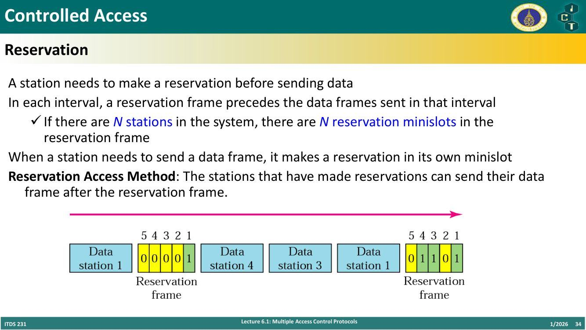
10.2 Polling (Select and Poll)
- ใช้กับ topology ที่มี primary station (master) 1 เครื่อง และ secondary stations (slaves)
- การแลกเปลี่ยนข้อมูลทั้งหมดต้องผ่าน primary
- primary ควบคุมลิงก์ และกำหนดว่าใครใช้ช่องได้เมื่อไหร่
- secondary ทำตามคำสั่ง
- Select = primary จะส่งข้อมูลให้ secondary / Poll = primary ถาม secondary ว่ามีข้อมูลจะส่งไหม
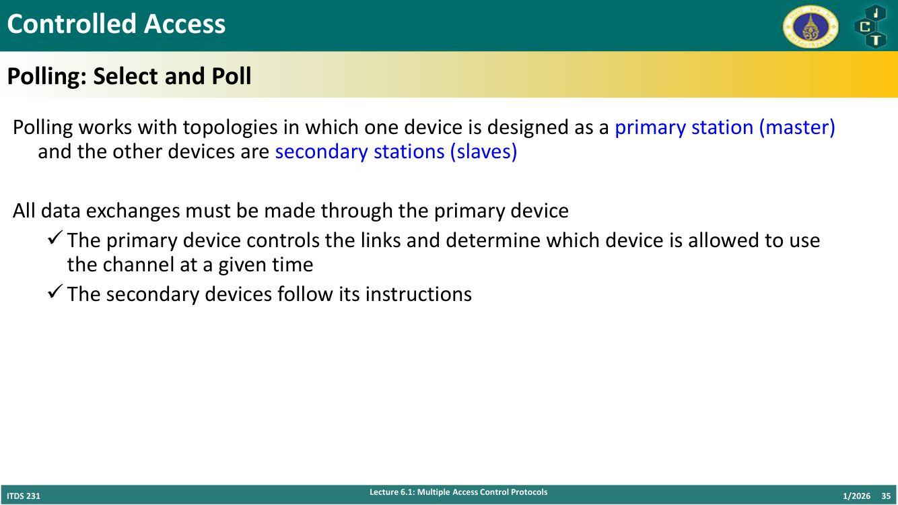
💡 เหมือนครูในห้องเรียน: นักเรียนพูดได้เฉพาะตอนครูเรียกชื่อ (poll) หรือครูพูดกับนักเรียนคนนั้น (select)
10.3 Token Passing
- สถานีจัดเรียงเป็น วงแหวน (ring) แต่ละสถานีมี successor (ถัดไป) และ predecessor (ก่อนหน้า)
- สถานี ส่งข้อมูลได้เมื่อได้รับ frame พิเศษชื่อ token
Flowchart:
- Start → รอ token
- จับ (capture) token
- มี data frame จะส่งไหม?
- Yes → ส่ง frame → หมดเวลาที่ได้รับจัดสรรหรือยัง? → No: กลับไปเช็คว่ามี frame อีกไหม / Yes: ไปข้อ 4
- No → ไปข้อ 4
- ปล่อย (release) token → Stop
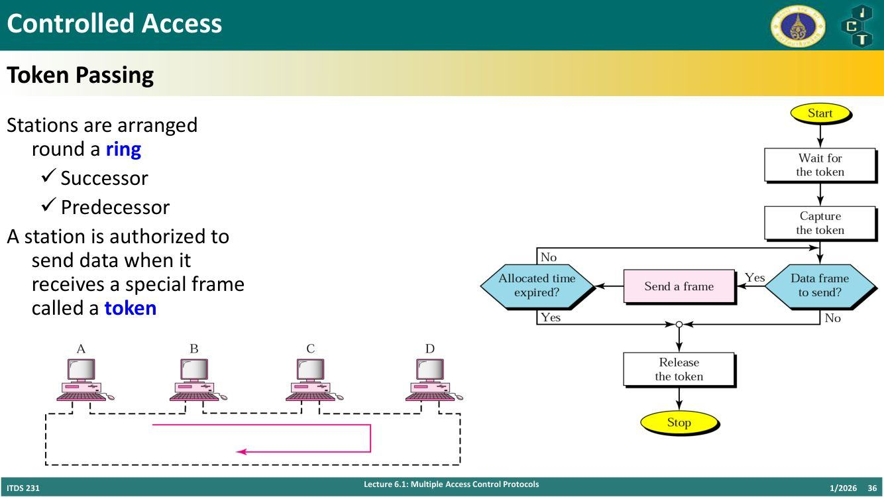
Physical และ Logical Ring Topology:
| a. Physical ring | b. Dual ring |
|---|---|
| สถานีต่อกันเป็นวงเดียว token วนทางเดียว | มี วงแหวนสำรองวงที่สอง วนทิศตรงข้าม — ถ้าวงหลักขาด ใช้วงสำรองได้ |
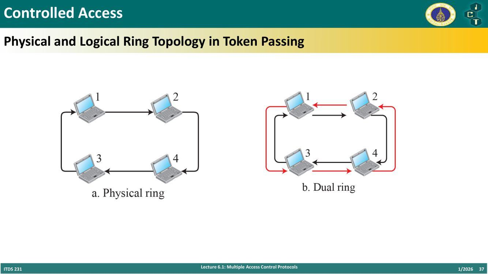
💡 Token = ไมค์ในวงประชุม: ใครถือไมค์คนนั้นพูด พูดเสร็จหรือหมดเวลาก็ส่งต่อคนข้าง ๆ
11. Channelization ⭐
Channelization = วิธี multiple-access ที่ แบ่ง bandwidth ของลิงก์ ให้สถานีต่าง ๆ ใช้ร่วมกัน
| วิธี | ชื่อเต็ม |
|---|---|
| FDMA | Frequency-Division Multiple Access |
| TDMA | Time-Division Multiple Access |
| CDMA | Code-Division Multiple Access |
| OFDMA | Orthogonal Frequency Division Multiple Access |
11.1 FDMA
- bandwidth ที่มีแบ่งกันใช้ทุกสถานี — แต่ละสถานีได้ ย่านความถี่ (band) ของตัวเอง
- FDMA = โปรโตคอล data link layer ที่ใช้ FDM ที่ physical layer
- ใช้ใน โทรศัพท์มือถือและเครือข่ายดาวเทียม
- bandwidth ของ common channel ถูกแบ่งเป็น bands ที่คั่นด้วย guard bands (ช่องว่างกันสัญญาณรบกวนกัน)
- ตัวอย่างในภาพ: Station 1, 2, 4 ส่งข้อมูลในย่านของตัวเอง Station 3 เงียบ (silent) ย่านของมันก็ว่างเปล่า
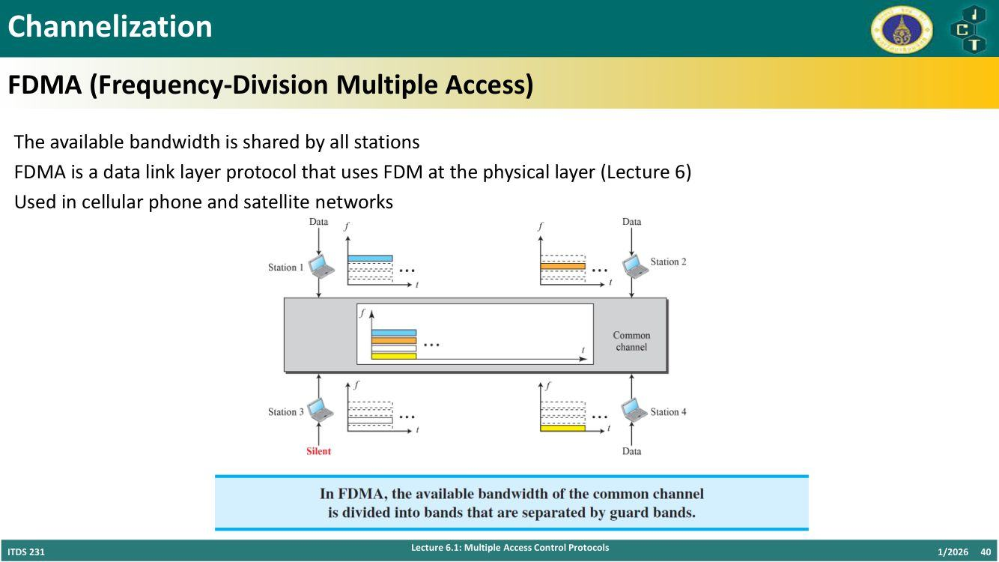
11.2 TDMA
- bandwidth ทั้งหมดเป็นช่องเดียว
- สถานี แบ่งกันใช้ตามเวลา (time slots)
- TDMA = โปรโตคอล data link layer ที่ใช้ TDM ที่ physical layer
- bandwidth เป็นช่องเดียวที่ time-share ระหว่างสถานี
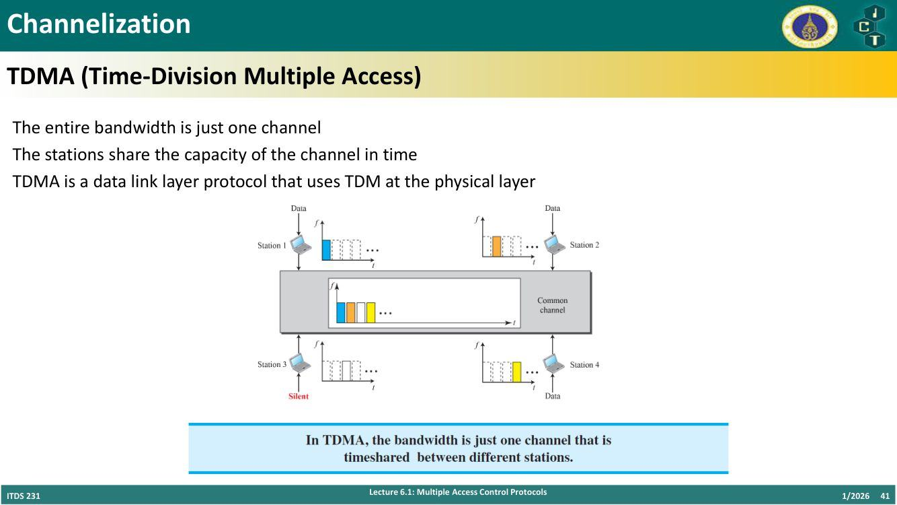
💡 เปรียบกับห้องที่มีคนคุยกันหลายคู่: FDMA = แต่ละคู่คุยคนละห้อง (แบ่งความถี่) TDMA = ทุกคู่ใช้ห้องเดียว ผลัดกันคุยตามเวลา (แบ่งเวลา) CDMA = ทุกคู่คุยพร้อมกันในห้องเดียว แต่ใช้คนละภาษา (แบ่งด้วยรหัส) — สไลด์ระบุเฉพาะชื่อ
12. ตารางเปรียบเทียบ
12.1 ALOHA / CSMA / CSMA/CD / CSMA/CA
| Pure ALOHA | Slotted ALOHA | CSMA | CSMA/CD | CSMA/CA | |
|---|---|---|---|---|---|
| Carrier sense | ❌ | ❌ | ✅ | ✅ | ✅ |
| ส่งเมื่อไหร่ | ทันที | ต้น slot | เมื่อช่องว่าง (ตาม persistence) | เมื่อช่องว่าง | ว่าง → IFG → random slots |
| จัดการ collision | รอ ACK, สุ่มแล้วส่งใหม่ | รอ ACK | ไม่ได้กำหนด | ตรวจจับ → abort → exponential backoff | หลีกเลี่ยง ด้วย IFS, contention window, RTS/CTS, NAV + ACK |
| Vulnerable time | 2 × T_fr | T_fr | — | — | — |
| ใช้ที่ | wireless LAN ยุคแรก (ฮาวาย) | ไม่ใช้จริง | legacy Ethernet (802.3) | Wi-Fi (802.11) |
12.2 CSMA/CD vs CSMA/CA
| CSMA/CD | CSMA/CA | |
|---|---|---|
| เครือข่าย | LAN แบบมีสาย (legacy Ethernet) | Wireless LAN (802.11) |
| แนวคิด | ตรวจจับ การชนแล้วแก้ | หลีกเลี่ยง การชนก่อนเกิด |
| Collision detection | ✅ (ดูระดับพลังงาน) | ❌ |
| ACK | ไม่จำเป็น | ✅ ต้องรอ ACK |
| Backoff | exponential backoff 0 ถึง (2^N − 1) × propagation time | contention window แบบ binary exponential |
| กลไกเสริม | — | IFS (priority), RTS/CTS, NAV |
| Duplex | half-duplex | half-duplex |
12.3 สามกลุ่มหลัก
| Random access | Controlled access | Channelization | |
|---|---|---|---|
| ลักษณะ | แข่งกัน ไม่มีใครคุม | ต้องได้รับอนุญาต ผลัดกัน | แบ่ง bandwidth |
| Collision | เกิดได้ | ไม่เกิด | ไม่เกิด |
| เหมาะกับ | bursty, โหลดเบา-กลาง | deterministic | ทรัพยากรแบ่งแน่นอน |
| ตัวอย่าง | ALOHA, CSMA/CD, CSMA/CA | Reservation, Polling, Token passing | FDMA, TDMA, CDMA |
13. คำศัพท์สำคัญ
| คำศัพท์ | ความหมาย | จำง่าย ๆ ว่า |
|---|---|---|
| Physical / Logical topology | การต่อจริง / การเชื่อมต่อเสมือนตาม IP | |
| Simplex / Half-duplex / Full-duplex | ทางเดียว / ผลัดกัน / พร้อมกัน | วิทยุ / walkie-talkie / โทรศัพท์ |
| Multiple access control | ขั้นตอนลดการชนบน shared/broadcast link | |
| Collision | สัญญาณชนกัน ระดับอ่านไม่ได้ | |
| Contention-based / Random access | แข่งกันใช้สื่อ | |
| Controlled access | ต้องได้รับอนุญาตก่อนส่ง | |
| Channelization | แบ่ง bandwidth | |
| ALOHA | ส่งทันที ไม่ฟัง รอ ACK | random access แรกสุด |
| Vulnerable time | ช่วงที่อาจชน | pure 2T_fr, slotted T_fr |
| Slotted ALOHA | ส่งได้เฉพาะต้น slot | |
| CSMA | ฟังก่อนส่ง | sense before transmit |
| Propagation delay | ทำให้ CSMA ยังชนได้ | |
| Persistence strategy | ทำอะไรเมื่อช่องไม่ว่าง | |
| Non-persistent | ไม่ว่าง → สุ่มรอแล้วฟังใหม่ | |
| 1-persistent | ฟังต่อ ว่างปุ๊บส่งเลย | |
| p-persistent | ว่างแล้วส่งด้วยความน่าจะเป็น p | |
| CSMA/CD | ตรวจจับการชน + exponential backoff | Ethernet เก่า |
| Exponential backoff | สุ่มรอ 0 ถึง (2^N − 1) × propagation time | |
| Energy level | idle = 0, ปกติ, collision สูงกว่า | |
| CSMA/CA | หลีกเลี่ยงการชน ไม่มี collision detection | Wi-Fi |
| IFG / IFS | InterFrame Gap/Space รอหลังช่องว่าง, กำหนด priority | ยาว = priority ต่ำ |
| Contention window | ช่วงสุ่ม slot, binary exponential | หยุดนับเมื่อไม่ว่าง |
| DCF / DIFS / SIFS | Distributed Coordination Function / DCF IFS / Short IFS | |
| RTS / CTS | Request to Send / Clear to Send | |
| NAV | Network Allocation Vector — timer งดส่ง | ป้ายห้องไม่ว่าง |
| Reservation | จองใน minislot ก่อนส่ง | N สถานี N minislots |
| Polling | primary คุม, select & poll | ครูเรียกชื่อ |
| Token passing | ส่งได้เมื่อถือ token (ring) | ไมค์ในวงประชุม |
| Successor / Predecessor | สถานีถัดไป / ก่อนหน้าใน ring | |
| Dual ring | วงแหวนสำรอง | |
| Token Ring / ARCNET | legacy controlled access networks | |
| BRAP / DQDB / DAMA | reservation-based protocols | |
| FDMA | แบ่งความถี่ + guard bands | คนละห้อง |
| TDMA | แบ่งเวลา ช่องเดียว | ผลัดกัน |
| CDMA | แบ่งด้วยรหัส | คนละภาษา |
| OFDMA | Orthogonal FDMA |
14. สรุปท้ายบท / จุดที่มักออกสอบ
- Physical vs logical topology
- Simplex / half-duplex (WLAN, hubs) / full-duplex (Ethernet switches)
- Multiple access control ลดการชนบน shared/broadcast link; collision เกิดได้แม้ต่างเครือข่ายถ้าความถี่เดียวกัน
- 3 กลุ่ม: random access (ALOHA, CSMA, CSMA/CD, CSMA/CA), controlled access (reservation, polling, token passing), channelization (FDMA, TDMA, CDMA)
- Contention-based: เหมาะ bursty/โหลดเบา-กลาง, ง่าย, แย่เมื่อโหลดหนัก, half-duplex
- Controlled access: deterministic; round-robin (polling = centralized, token = decentralized); reservation (BRAP centralized, DQDB/DAMA decentralized); Token Ring, ARCNET
- Access method จริง: Fast Ethernet = CSMA/CD, Gigabit Ethernet = switched, Wireless LAN = CSMA/Polling
- ALOHA: early 1970s, radio LAN 9600 bps; no carrier sense, no collision check, ACK timeout = 2 × max propagation delay แล้วสุ่มส่งใหม่
- Vulnerable time: pure ALOHA = 2 × T_fr, slotted ALOHA = T_fr
- CSMA: sense before transmit; ลดแต่กำจัดการชนไม่ได้เพราะ propagation delay
- Persistence: non-persistent (สุ่มรอ), 1-persistent (รอจนว่างแล้วส่งทันที), p-persistent (p = 0.2 → สุ่ม 1–100 น้อยกว่า 20 ส่ง)
- CSMA/CD: ตรวจการชน → abort → exponential backoff 0 ถึง (2^N − 1) × propagation time; ตรวจจาก energy level; CSMA เปล่า ๆ ไม่ใช้จริงเพราะไม่มีขั้นตอนจัดการ collision
- CSMA/CA: ไม่มี collision detection; persistence → IFG → random contention window → ส่ง → รอ ACK; ใช้ใน WLAN
- IFS ยาว = priority ต่ำ; contention window ใช้ binary exponential backoff (เริ่ม 1 slot แล้วคูณ 2); ช่องไม่ว่าง → หยุด timer ไม่ restart
- RTS/CTS/NAV: DIFS → RTS → SIFS → CTS → SIFS → Data → SIFS → ACK; สถานีอื่นตั้ง NAV ตามเวลาที่ระบุ; เช็ค NAV ก่อนฟังสื่อ
- Reservation: N สถานี N minislots, จองก่อนแล้วส่งหลัง reservation frame
- Polling: primary/secondary, ทุกการสื่อสารผ่าน primary (select & poll)
- Token passing: ring, successor/predecessor, ส่งได้เมื่อถือ token, หมดเวลาต้องปล่อย; physical ring vs dual ring
- Channelization: FDMA (แบ่งความถี่ + guard bands, มือถือ/ดาวเทียม, ใช้ FDM), TDMA (ช่องเดียวแบ่งเวลา, ใช้ TDM), CDMA, OFDMA